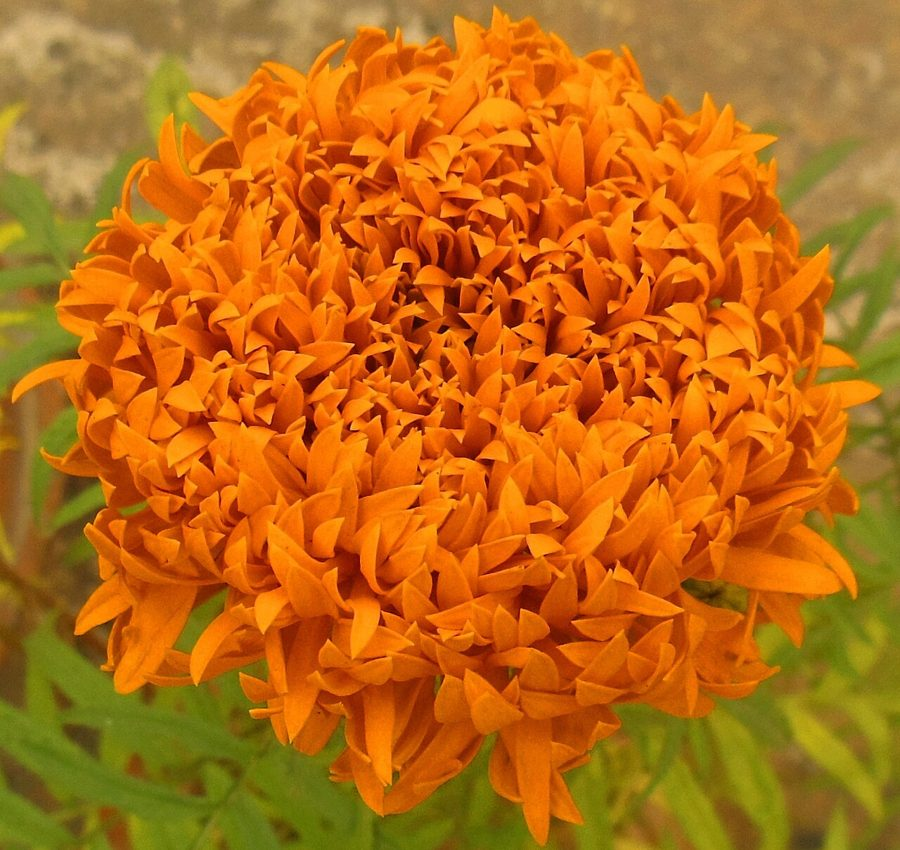

गेंदाMarigold
Tagetes erecta · Asteraceae · FLR-0308

- Scientific name वैज्ञानिक नाम
- Tagetes erecta L.
- Family कुल
- Asteraceae
- Hindi हिंदी
- गेंदा
- Local names स्थानीय नाम
- genda, gainda, marigold
- Status here यहाँ की स्थिति
- cultivated
- Movement आवागमन
- Resident, here all year
- Known from कहाँ दर्ज
- Others have published records from the Basti–Ayodhya districts बस्ती–अयोध्या के ज़िलों से दूसरों के प्रकाशित अभिलेख
- IUCN IUCN
- not evaluated
- Review समीक्षा
- audited and independently read
When to look कब देखें
Expected mainly in July, August, September, October, November, December, January, February. मुख्यतः जुलाई, अगस्त, सितंबर, अक्टूबर, नवंबर, दिसंबर, जनवरी, फ़रवरी में अपेक्षित।
Uses and possibilities उपयोग और संभावनाएँ
Drawn from the documented uses in the profile below, where each is labelled traditional, current or a research lead. All uses →
गेंदा / Marigold
Tagetes erecta L. — Asteraceae
गेंदा — खेतों और बागों में उगाया जाने वाला पौधा, जिसके बड़े, पीले, नारंगी फूल पूजा के समय बहुत माँगे जाते हैं। दिवाली और देवी पूजन में इसके फूल घर और मंदिरों को सजाते हैं। किसान इसे सब्ज़ी के खेतों में कीटों को दूर भगाने के लिए लगाते हैं। सुगंध तीव्र, कुछ सुखद, कुछ लोगों को तीव्र लगती है।
Quick Identification त्वरित पहचान
| Feature | Description |
|---|---|
| Size | Erect annual herb 0.6–1.2 m tall |
| Leaves | Pinnately compound, 15–20 cm long; leaflets narrow, toothed, aromatic |
| Flowers | Large pompom-like heads, 5–8 cm diameter, fully double in cultivated varieties; golden-yellow to bright orange; borne on long stems singly or in clusters |
| Fruit | Narrow, elongate achenes with pappus of needle-like scales |
| Odour | Characteristic, pungent, aromatic-spicy |
| The test | Large, fully double flowers in orange or yellow; highly aromatic leaves |
Field tip: Marigold is widely cultivated in eastern UP during October–February. Look for tall, erect plants with pinnately compound, aromatic leaves and large, pompom-like, fully-double flowers in golden-yellow or bright orange. The plant is unmistakable.
हिंदी — कैसे पहचानें: बड़े, पीले या नारंगी, पूरे भरे फूल। पत्तियाँ पंखनुमा, बहुत सुगंधित, तीव्र गंध। लंबे तने पर एक-एक फूल।
Morphology आकारिकी
Biometrics (cultivated plants in eastern UP):
| Measurement | Range |
|---|---|
| Plant height | 0.6–1.2 m |
| Leaf length | 15–20 cm |
| Flower head diameter | 5–8 cm |
| Flowering period | October–February (rabi) or July–September (monsoon) |
Root system: Taproot; moderate depth, suitable for cultivation.
Stem and branches: Erect, herbaceous when young, becoming woody at base with age. Angular (four-angled), green. Much-branched; each branch terminates in a flower.
Leaves: Opposite, pinnately compound, 15–20 cm long, with many narrow (linear to lanceolate) leaflets, 3–5 cm long, finely serrated. Very aromatic; the scent is distinctive and pungent, sometimes described as spicy.
Flowers: Large, terminal, fully double in cultivated varieties (result of centuries of selection). The flower heads (capitula) are 5–8 cm in diameter, composed of many densely packed disc and ray florets. Colour is golden-yellow to bright orange (rarely other colours in traditional varieties). Borne singly on long stems or in small clusters.
Fruit: Narrow, elongate achenes (single-seeded fruits) with a pappus of 2–5 needle-like scales.
हिंदी: पत्तियाँ पंखनुमा, पतली, दाँतेदार, बहुत सुगंधित, तीव्र। फूल बड़े, पूरे भरे, पीले या नारंगी। बीज पतली सुई जैसी।
Behaviour & Ecology व्यवहार और पारिस्थितिकी
Marigold is a tender annual herb, native to Mexico, cultivated worldwide for ornament and religious use. In eastern UP it is grown as a winter/rabi crop (October–February) and monsoon crop (July–September), depending on irrigation and rainfall. The plant is photoperiod-sensitive and flowers more profusely under cool-season conditions. It thrives in well-drained soils and is moderately drought-tolerant. The flowers are visited by bees, butterflies, and other insects. The plant is also cultivated as a pest deterrent in intercropping systems, as the roots and foliage contain compounds that deter certain insects.
हिंदी: मेक्सिको का पौधा, अब सब जगह लगता है। सर्दियों में अच्छा बढ़ता है। कीटों को भगाता है। मधुमक्खियाँ इसे पसंद करती हैं।
Life Cycle / Phenology जीवन चक्र
Rabi crop (October–February; eastern UP):
| Month / season | Event |
|---|---|
| August–September | Nursery sowing; seedling raising |
| September–October | Field preparation; transplanting into main field |
| October–November | Vegetative growth; branch and leaf development |
| November–January | Flower production; peak bloom January–February |
| February–March | Seed collection; harvest and dry; plant residue incorporation |
Kharif/monsoon crop (July–September):
| Month / season | Event |
|---|---|
| May–June | Nursery sowing in protected beds |
| June–July | Transplanting; monsoon rains support growth |
| July–August | Flower initiation and bloom |
| August–September | Seed production; partial harvest of flowers for immediate use |
Seed to flower: 60–90 days from sowing, depending on season and variety.
हिंदी: सर्दियों में: सितंबर में नर्सरी, अक्टूबर में खेत में, नवंबर-जनवरी में फूल। बारिश में: जून में नर्सरी, जुलाई-अगस्त में फूल।
Cultivation Calendar खेती का समय
| Period | Crop Type | Event |
|---|---|---|
| Rabi (winter) | Marigold | Sept: Nursery → Oct: Transplant → Nov–Feb: Flower → Feb: Harvest |
| Kharif (monsoon) | Marigold (in suitable areas) | May–June: Nursery → July: Plant → July–Sept: Flower |
Pests and Diseases कीट और रोग
- Insects: Leaf-eating beetles, spider mites in dry conditions, flea beetles on seedlings.
- Fungal diseases: Powdery mildew in dense, humid crops; root rot in waterlogged fields.
- Bacterial: Rare; not significant in eastern UP.
- Management: Intercropping with garlic or Onion; rotation with non-host crops; removal of diseased plants.
Agricultural / Human Relevance कृषि प्रासंगिकता
Religious and cultural use (documented use):
Marigold is the flower of choice for Hindu worship and festivals. Large quantities are required for Diwali, Durga Puja, marriages, and daily temple offerings. The demand is high and local cultivation is encouraged by extension services. A significant portion of eastern UP's marigold production is used locally; the remainder is sold in regional markets.
Commercial cultivation: Marigold is a profitable crop for small and marginal farmers. Flowers are harvested daily at early morning, sorted, and sold in local markets or to traders. The crop requires minimal investment and is suitable for diverse landholdings.
Pest management (documented): The roots and foliage of marigold contain sulfur-containing compounds (thiophenes) that repel nematodes and some insects. Farmers intercrop marigold with vegetables to reduce pest damage.
Today. Marigold cultivation is widespread in eastern UP, particularly in the rabi season. Many farmers grow small patches for local sale or household use.
Research direction (a lead, not a result). The optimization of marigold production for winter flowering, breeding of locally-adapted varieties, and documentation of farmer practices merit further study.
हिंदी: पूजा के फूल हैं। दिवाली में बहुत माँगे जाते हैं। गाँव की महिलाएँ इसे उगाती हैं। खेत में कीटों को भी भगाता है। अच्छा पैसा मिलता है।
Expected Locally स्थानीय रूप से अपेक्षित
Not a field record. Written from published accounts for eastern Uttar Pradesh. No confirmed local sighting yet — if you have seen it, that is what the atlas needs.
अभी तक स्थानीय पुष्टि नहीं। यह विवरण प्रकाशित स्रोतों से है, किसी अवलोकन से नहीं।
GBIF holds published records from these districts. Marigold is to be expected as a cultivated crop in fields, gardens, and homesteads throughout Basti and Ayodhya districts during October–February (peak season). Smaller plantings are present year-round in home gardens and near temples.
Distribution वितरण
Global range: Native to Mexico; cultivated worldwide.
In India: Widely cultivated in gardens and fields, particularly during the rabi season.
In Uttar Pradesh: Major cultivation in rabi and monsoon crops, particularly in eastern districts.
In Basti district / eastern UP: Abundant during October–February. Cultivated in fields, gardens, and near temples.
Research Questions शोध प्रश्न
- When does marigold planting begin and end in your village, and how much area is under cultivation? / आपके गाँव में गेंदा कब बोया जाता है और कितने जमीन पर? — Survey farmers; document area and timing.
- How much do farmers earn per unit area from marigold cultivation? / एक बीघे से कितने पैसे मिलते हैं? — Record production and sale prices.
- Which insects are pests of marigold in your area, and how are they managed? — Observe crops; ask farmers about pest management.
- How is marigold used in your village — for worship, for sale, or both? — Document uses and market channels.
- Can marigold be grown profitably in the monsoon season in your area? — Experiment with monsoon planting.
Similar Species मिलती-जुलती प्रजातियाँ
| Species | How to tell apart | हिंदी |
|---|---|---|
| French Marigold (Tagetes patula) | Smaller flowers (3–4 cm); lower height (30–50 cm); more compact growth; finer foliage | फ्रेंच गेंदा — छोटा फूल; कम उँचाई |
| pot marigold (Calendula officinalis) | Single or semi-double flowers; leaves simpler, less aromatic; different family (Asteraceae but different genus) | हल्दी गुलाब — सरल पत्तियाँ; गुलाबी फूल |
| Chrysanthemum | Similar compound leaves; but flowers have different structure (ray florets more prominent); different growing season | गुलदाउदी — सर्दियों में, फूल अलग |
Field rule: A tall annual herb with pinnately compound, aromatic leaves and large, pompom-like, fully-double flowers in bright yellow or orange, cultivated as a winter crop, is Marigold.
Taxonomy & Classification वर्गीकरण
Original description. Described by Carl Linnaeus in Species Plantarum (1753). The genus Tagetes name comes from the Etruscan god Tages; the species epithet erecta means "upright."
Subspecies. Monotypic — no subspecies are currently recognised.
Family and order placement. Asteraceae (daisy family), order Asterales. Tagetes includes over 30 species, most native to Mexico and South America.
Phylogenetic notes. Tagetes erecta is closely related to T. patula (French Marigold) and other cultivated Tagetes.
IUCN status rationale. Not evaluated. Widely cultivated; not threatened.
Photo Gallery फोटो गैलरी
Photos needed आवश्यक फोटो
- [ ] Whole plant in flower
- [ ] Close-up of large pompom-like flower
- [ ] Pinnately compound leaves
- [ ] Flower harvesting and sorting
- [ ] Flowers in temple or religious setting
No photos yet — add field photos to media/species/marigold/ and run node scripts/sync_photos.js.
References संदर्भ
- Linnaeus, C. (1753). Species Plantarum, vol. 2, p. 887. [original description]
- Hooker, J.D. (1881). The Flora of British India, vol. 3. L. Reeve, London.
- Duthie, J.F. (1903). Flora of the Upper Gangetic Plain. Government Printing, Calcutta.
- Chatterjee, D. (1970). Taxonomy of Asteraceae in India. Indian National Science Academy, New Delhi.
- Sharma, G.R. & Singh, H. (1997). Marigold cultivation in northern India. Indian Horticulture 42(3): 25–32.
- GBIF Occurrence Data — Tagetes erecta, India (2026).
Source file: species/flora/crops/marigold.md